O controlo financeiro começa aqui.
Organiza o teu dinheiro com clareza — sem anúncios, sem contas externas e sem recolha de dados pessoais.
O Ponto Zero foi criado para quem quer saber exatamente para onde vai cada euro, de forma simples e privada.
Porque a maioria das pessoas perde o controlo financeiro
Não é falta de rendimento. É falta de visibilidade.
- Pequenas despesas acumulam
- Subscrições passam despercebidas
- Empréstimos parecem menores do que são
- O dinheiro desaparece antes do fim do mês
É não saber quanto realmente podes gastar.
Clareza total
O Ponto Zero mostra a tua situação financeira real num só lugar.
Podes acompanhar:
- saldo atual
- receitas e despesas
- despesas fixas e variáveis
- poupanças
- dívidas e empréstimos
Tudo sem ligação a bancos e sem sincronizações externas.
O que podes controlar
Com o Ponto Zero consegues acompanhar toda a tua organização financeira.
Regista receitas e despesas rapidamente e acompanha o impacto no teu saldo.
Organiza o dinheiro por contas diferentes (banco, carteira, cartão, poupança).
Acompanha poupanças e evolução financeira ao longo do tempo.
Controla empréstimos e acompanha o progresso do pagamento.
Consulta resumos financeiros claros por mês, semana, ano ou período personalizado.
Funcionalidades principais
Tudo o que precisas para controlar o teu dinheiro, com simplicidade.
Adiciona receitas ou despesas em segundos.
Visualiza a tua situação financeira de forma clara.
Acompanha poupanças e crescimento financeiro.
Sabe quanto ainda deves e quanto já pagaste.
Exporta e restaura os teus dados sempre que quiseres.
Proteção com PIN e autenticação biométrica.
Interface simples com opções de tema e personalização.
Vê como o Ponto Zero funciona na prática
Cada área da aplicação foi pensada para dar mais clareza à tua organização financeira, sem complexidade desnecessária.
Home — visão geral financeira
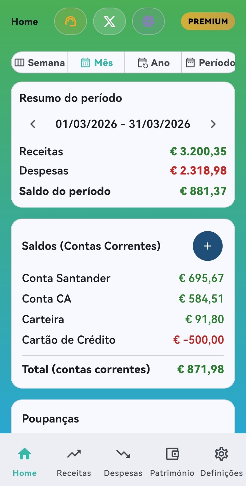
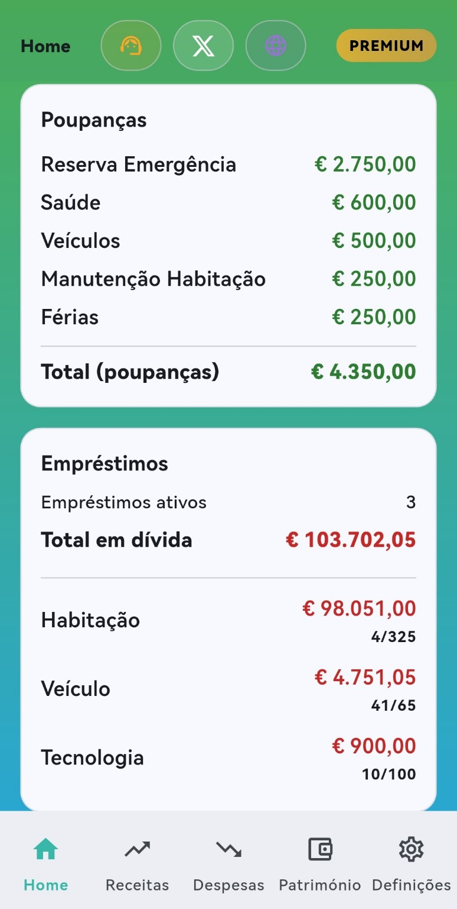
No separador Home é possível consultar rapidamente a situação financeira geral.
Este ecrã apresenta vários painéis com a informação essencial do dia a dia financeiro:
- resumo do período selecionado
- total de receitas e despesas
- saldo do período
- saldos das contas correntes
- total de poupanças
- empréstimos ativos e valor total em dívida
Na parte superior estão também disponíveis atalhos rápidos para:
- página de suporte
- redes sociais da aplicação
- website oficial do Ponto Zero
É também apresentado o badge Premium, que indica a existência de funcionalidades adicionais disponíveis na versão Premium da aplicação.
Esta visão permite perceber rapidamente a situação financeira atual num único ecrã.
Transferências entre contas
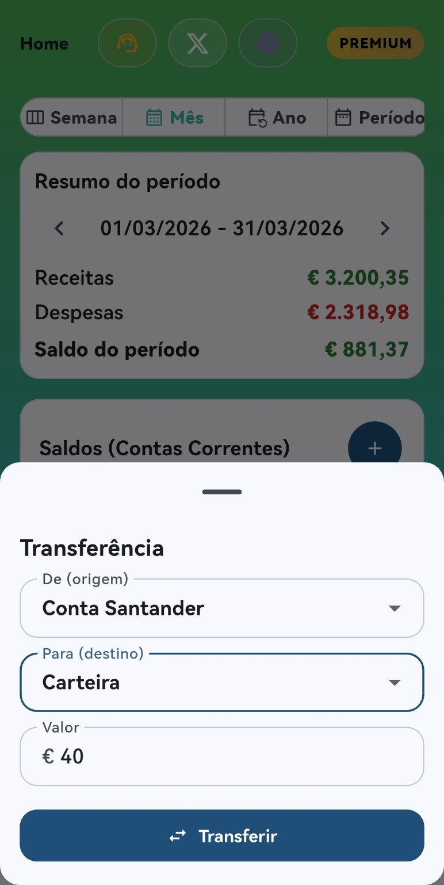
A aplicação permite realizar transferências internas entre contas correntes.
Esta funcionalidade é útil para mover dinheiro entre contas sem criar artificialmente novas receitas ou despesas.
Exemplos de utilização:
- transferir dinheiro da carteira para uma conta bancária
- reorganizar saldo entre contas diferentes
- distribuir dinheiro entre contas de gestão diária
Desta forma, os saldos das contas mantêm-se organizados e refletem melhor a realidade financeira.
Receitas
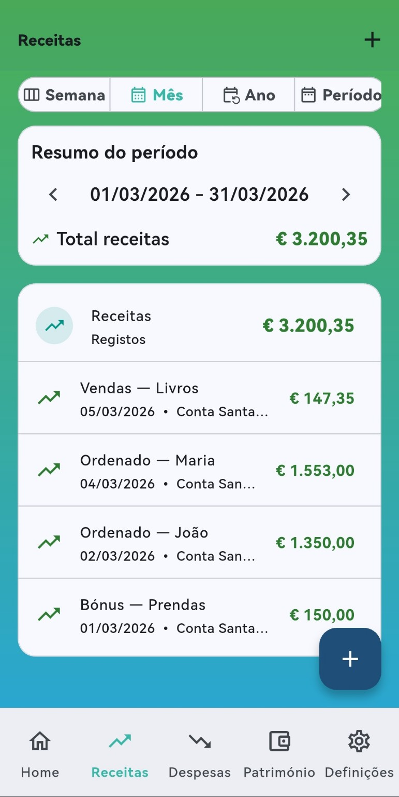
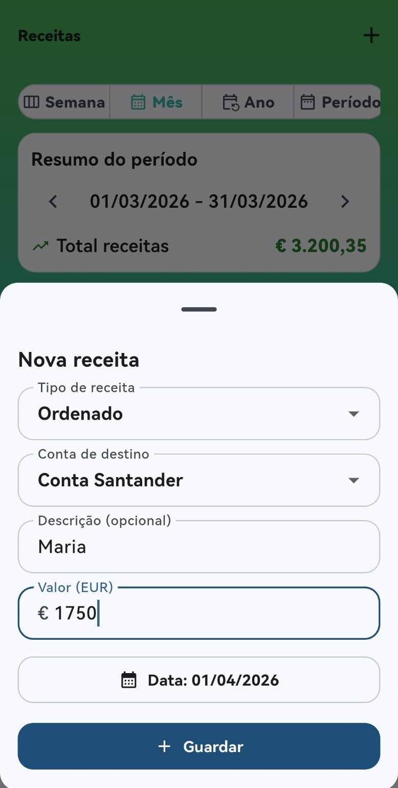
No separador Receitas é possível acompanhar todas as entradas de dinheiro.
A aplicação apresenta:
- lista de receitas registadas
- resumo do período selecionado
- total de receitas
Cada registo pode incluir:
- valor
- categoria
- conta de destino
- data
- descrição opcional
Isto permite acompanhar de forma clara a origem do dinheiro e a evolução das receitas ao longo do tempo.
Despesas
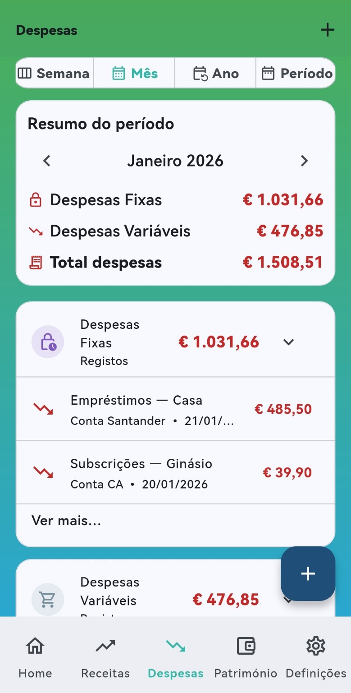
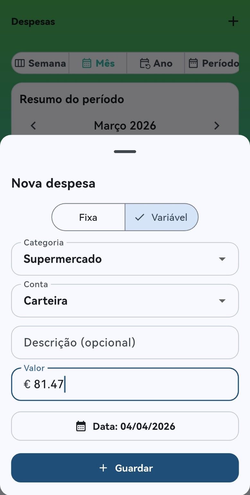
O separador Despesas permite acompanhar todos os gastos do dia a dia.
As despesas podem ser organizadas por categorias e separadas entre:
- despesas fixas
- despesas variáveis
A aplicação apresenta:
- lista de despesas registadas
- resumo do período
- total de despesas
Cada registo pode incluir:
- valor
- categoria
- conta associada
- data
- descrição opcional
Esta organização ajuda a perceber melhor para onde vai o dinheiro e quais são os principais tipos de despesa.
Património
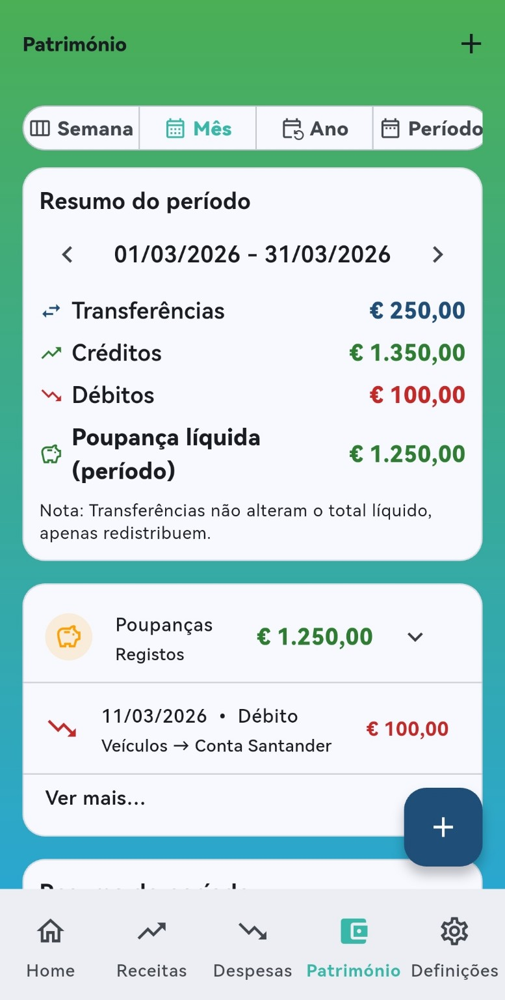
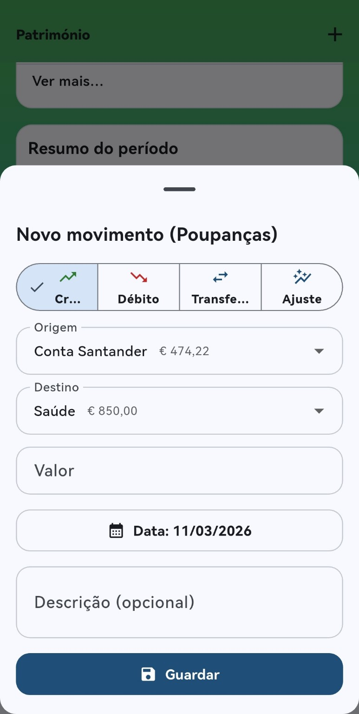
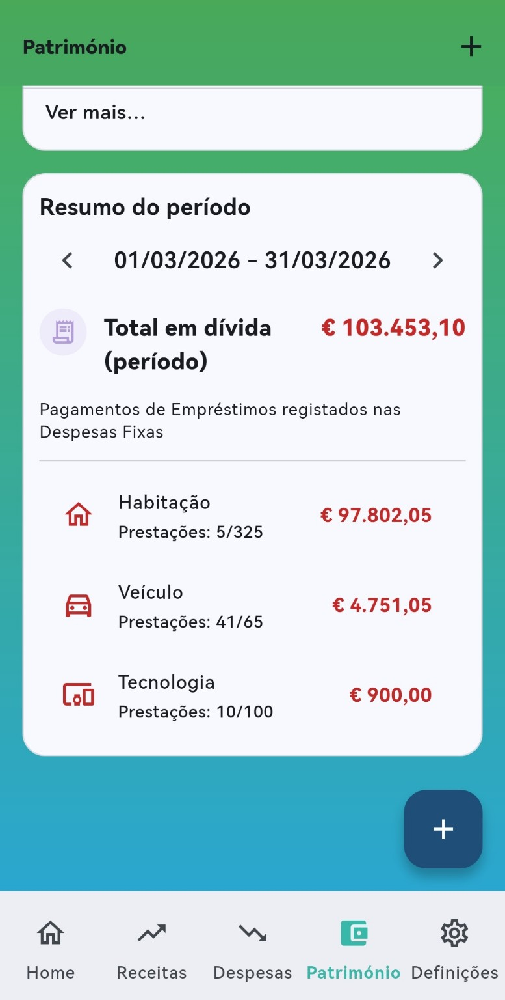
A área de Património permite acompanhar a evolução financeira para além das receitas e despesas do dia a dia.
Aqui é possível acompanhar:
- contas de poupança
- evolução das poupanças
- movimentos associados às poupanças
- empréstimos e dívidas
A aplicação apresenta:
- total de poupanças
- histórico de movimentos de poupança
- total de empréstimos em dívida
- progresso de pagamento das dívidas
Esta secção ajuda a acompanhar a evolução financeira real ao longo do tempo.
Definições e personalização
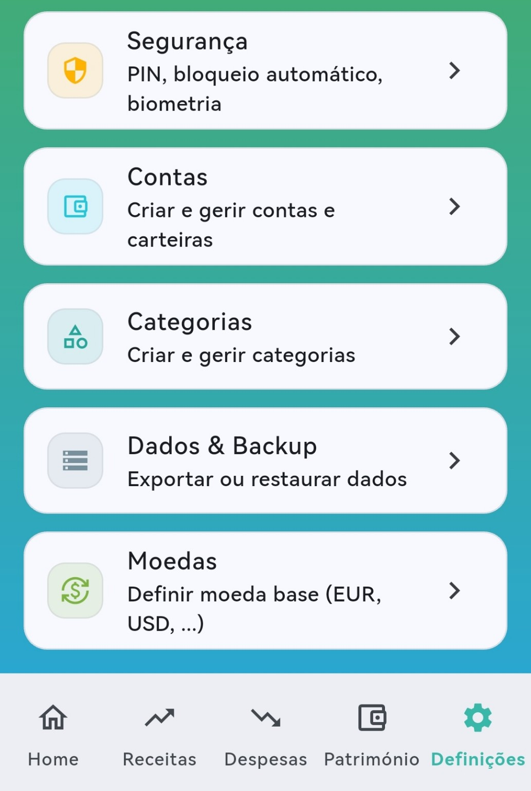
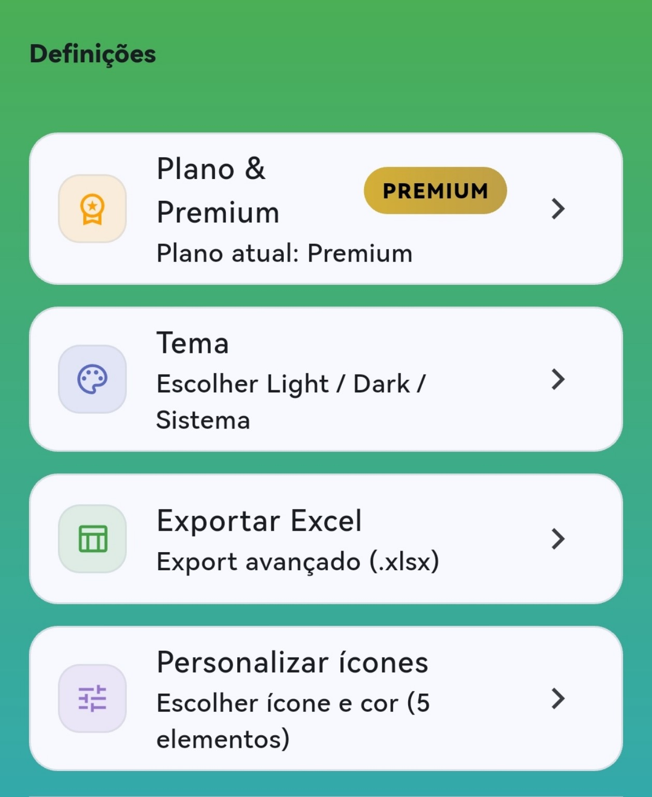
O separador Definições reúne todas as opções de configuração da aplicação.
Nesta área é possível gerir:
- segurança da aplicação (PIN e biometria)
- backups e restauro de dados
- categorias de receitas e despesas
- contas correntes, poupanças e empréstimos
- exportação de dados para Excel
- moedas disponíveis
- personalização visual
- temas da aplicação
Estas opções permitem adaptar a aplicação às preferências do utilizador e garantir maior controlo sobre os dados financeiros.
Privacidade primeiro
O Ponto Zero foi desenvolvido com privacidade como prioridade.
A aplicação:
- não cria contas
- não recolhe dados pessoais
- não envia dados financeiros para servidores
- não utiliza publicidade
- não utiliza rastreamento
Toda a informação financeira permanece apenas no teu dispositivo.
Tu és o único dono dos teus dados.
Simples, sem automatismos confusos
Sem automatismos confusos.
Sem sincronizações externas.
Para pessoas reais
O Ponto Zero foi criado para pessoas que querem organização financeira simples.
É ideal para quem:
- quer controlar receitas e despesas
- quer acabar com dívidas
- quer acompanhar poupanças
- quer perceber para onde vai o dinheiro
É uma app para pessoas reais.
Versão gratuita e Premium
A aplicação pode ser usada gratuitamente.
- registo de receitas e despesas
- registo de poupanças e empréstimos
- gestão de contas
- gestão de categorias
- resumos mensais
- backup manual
- proteção por PIN
- resumos por semana
- resumos por ano
- período personalizado
- backup automático
- exportação de Excel
- autenticação biométrica
- personalização visual adicional
Perguntas frequentes
A app liga à minha conta bancária?
Não. Os dados são inseridos manualmente para garantir privacidade total.
Posso perder os dados?
Só se desinstalares a aplicação sem backup. A app permite exportar e restaurar os dados.
Funciona offline?
Sim. As funcionalidades principais não necessitam de internet.
É gratuita?
Existe uma versão gratuita e uma versão Premium opcional.
Porque nasceu o Ponto Zero
Muitas pessoas trabalham, recebem e pagam contas, mas chegam ao fim do mês sem perceber exatamente para onde foi o dinheiro.
O objetivo
Dar clareza financeira sem complexidade, sem sincronizações bancárias e sem recolha de dados pessoais.
Princípios
- Offline-first — funciona sem internet
- Privacidade — nenhum dado vai para servidores
- Decisões conscientes — informação simples e prática
Começa hoje
Controlar dinheiro não é difícil.
Difícil é viver sem saber para onde ele vai.
Ponto Zero
Controlo financeiro real.